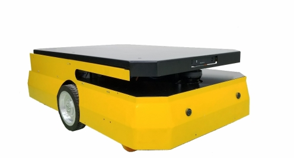
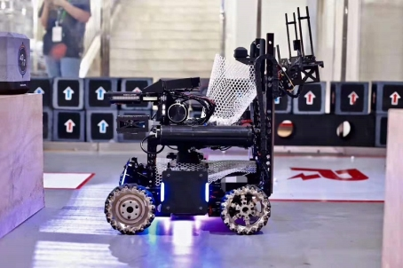
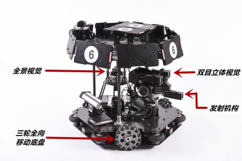
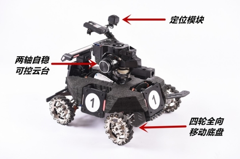
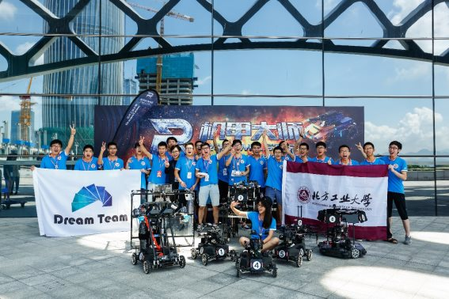

基本信息 Basic information
姓名 | 李 鑫 | 出生年月 | 1994.10.28 |
邮箱 | lixin_ray@163.com | 政治面貌 | 中共党员 |
手机号 | 18859263213 | 毕业时间 | 2021 |
教育背景 Educational experience
2018.09-至今 厦门大学 Xiamen University
硕士 控制工程 control engineering
2014.09-2018.06 北方工业大学 North China University of Technology
本科 自动化专业 Automation Engineering
工作经历/实习经历 Internship Experience
2018.06-2018.08 深圳市大疆创新科技有限公司
实习描述：2018 DJI全国大学生机器人主题夏令营
负责机器人建图和路径规划设计与实现
负责机器人视觉算法设计，实现机器人目标识别与对准系统
实习成果：夏令营决赛冠军
项目与竞赛经历 Project Experience
2019.09-至今 全天候多模态融合环境感知与韧性导航方法研究
项目描述：在研项目，一般领域基金，2019-2021，经费 50 万元。
负责事宜：
设计基于3D激光雷达的户外机器人SLAM 系统
研究与实现基于地平面点云特征匹配算法和基于非地平面点云聚类NDT算法
2018.09-至今 基于激光与惯性定位的自主导航AGV装置研发
项目描述：在研项目，福建省产学重大项目，2017-2020，经费 350 万元。
负责事宜：
多传感器融合与高精度建图技术研发
设计了基于多分辨率搜索与多点云密度匹配的快速ICP-SLAM算法（论文）
设计并完成了基于优化搜索点云匹配的激光AGV自主充电系统（专利）
项目成果： 验收样机完成，导航定位精度<2cm，充电定位精度<1cm
2019.05-2019.09 小型无人机视觉惯性导航方法研究
项目描述：针对无人机应用场景中定位精度和实时性问题，设计视觉惯性融
合导航算法，构建紧耦合的视觉惯性导航系统以满足快速运动下运动跟踪
负责事宜：
基于SVO算法实现视觉惯性融合的半直接单目里程计算法（论文）
实现单目视觉的尺度估计功能
2017.09-2018.08 2018全国大学生机器人大赛Robomaster
竞赛描述：全国大学生机器人大赛RoboMaster
负责事宜：团队顾问
移动机器人双目视觉算法设计与实现
团队运作与管理
竞赛成果： 国家一等奖，全国六强（排名6/128）
2018.02-2018.06 大学生实训培养计划
项目描述：基于面向对象方法的移动机器人平台的搭建
负责事宜：项目组长
软件架构的设计与实现
平台嵌入式部分的代码编写与调试
项目成果： 北京市北方工业大学优秀毕业论文
2016.09-2017.08 2017全国大学生机器人大赛Robomaster
竞赛描述：全国大学生机器人大赛Robomaster
负责事宜：团队队长
基于双目-全景视觉的目标跟踪算法设计与实现
机器人嵌入式软件架构搭建
机器人整体控制部分软件设计与实现
竞赛成果： 国家一等奖，全国六强（排名6/114）
论文与专利 Papers and Patents
2020.02 基于多分辨率搜索与多点云密度匹配的快速ICP-SLAM方法，机器人，EI，录用待发表，第一作者
2019.08 一种激光导航AGV高精度定位及目标对准控制方法，发明专利，已受理，第二发明人(第一为导师)
2020.02 基于视觉惯性融合的半直接单目视觉里程计，机器人，EI，外审中，第四作者
获奖经历 Award&Prize
2018.08 2018 DJI全国大学生机器人主题夏令营 冠军
2018.08 2018全国大学生机器人大赛Robomaster 国家一等奖（排名6/128）
2018.06 北京市北方工业大学优秀毕业论文
2017.08 2017全国大学生机器人大赛Robomaster 国家一等奖（排名6/114）
2016.08 2016全国大学生机器人大赛Robomaster 国家二等奖
2016.08 2016全国大学生机器人大赛Robomaster 最佳创意奖
2015.11 NAO机器人创客编程马拉松北京站 优秀奖
2019.11 获得厦门大学院级三好学生
2014-2018 多次获得北方工业大学奖学金
个人技能 Skills
熟练使用C/C++语言；
熟悉Python；
熟悉ICP、NDT、特征匹配等点云匹配方法，熟悉常用滤波算法和非线性优化
熟练使用Linux系统以及ROS，具备SLAM建图、路径规划的研发和应用能力；
熟练使用51，STM32系列单片机，rt-thread嵌入式操作系统；
OpenCV库开发和应用，具备熟练的图像处理，机器视觉处理能力；
熟悉Matlab编程，Simulink，具备数据处理，算法开发能力；
英语六级
所学主要课程 Major Course
高等运筹学；最优化方法；模式识别；机器学习；工程中的随机过程等
主要作品 Major Project
1. （2019）自主导航AGV
a) 负责多传感器融合与高精度建图技术研发
b) 负责机器人路径规划技术研发，自动充电运动控制技术研发
c) 机器人整体软件架构搭建

全柔性自主式AGV机器人
2. （2018）ICRA全自动对抗机器人
a) 激光slam建图与导航
b) 基于最小二乘法拟合高阶曲线的机器视觉识别
c) 全自主机器人行为树的设计与实现

ICRA全自动对抗机器人
3. （2017）基于双目立体视觉-全景视觉异构系统的全自动目标追踪识别系统一套
a) 双目立体视觉特征检测识别算法
b) 最小二乘法线性拟合的应用
c) 代码优化与提速（双目30HZ、全景50HZ）
d) 全景视觉抗干扰能力（环境标定）
e) 双目-全景信息融合处理
f) 目标跟踪算法

双目立体视觉-全景视觉异构系统
4. （2016）全向移动机器人平台，
a) 面向对象方法的移动机器人控制系统软件架构
b) 四轮（三轮）全向移动算法
c) 基于MEMS惯性传感器的两轴自稳可控云台系统
d) 基于编码器与MEMS惯性测量元件多传感器融合，完成惯性定位系统一套
e) 机器人运动方向自整定串级PID算法

四轮全向移动机器人平台
5. （2017）参赛照片

2017全国大学生机器人大赛总决赛（正中间身着淡蓝色短裤为本人）
个人作品视频（点击图片打开YouTube视频）